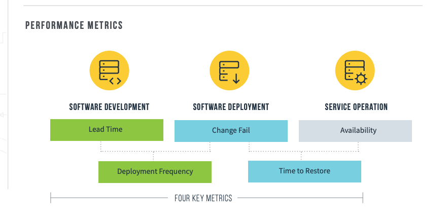
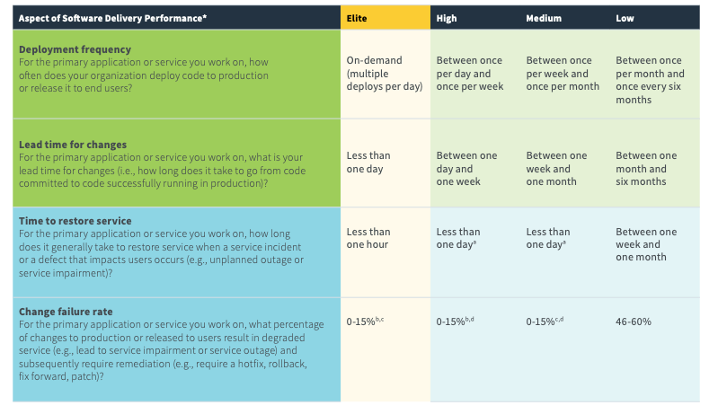
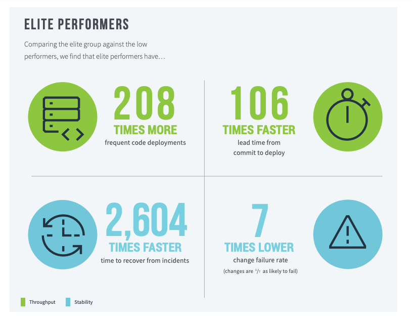
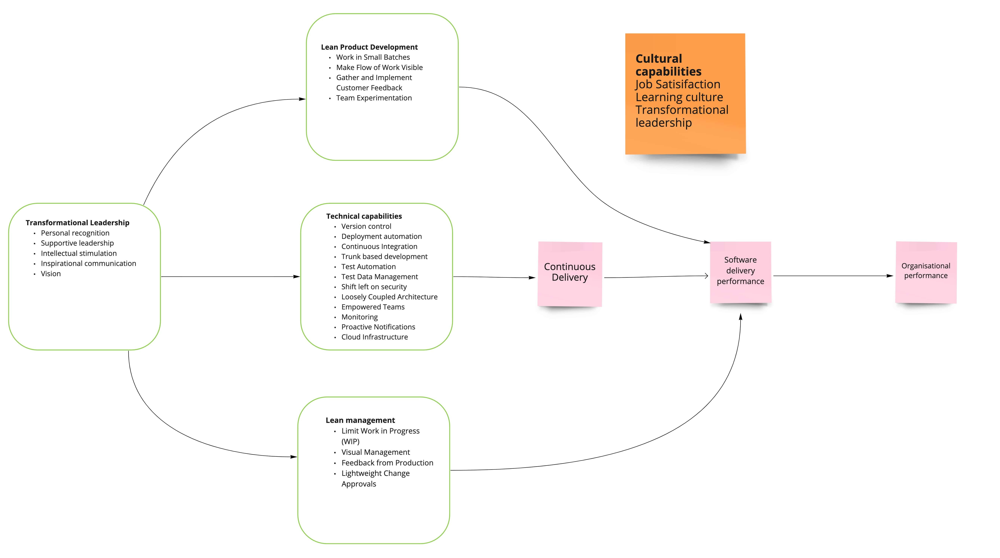
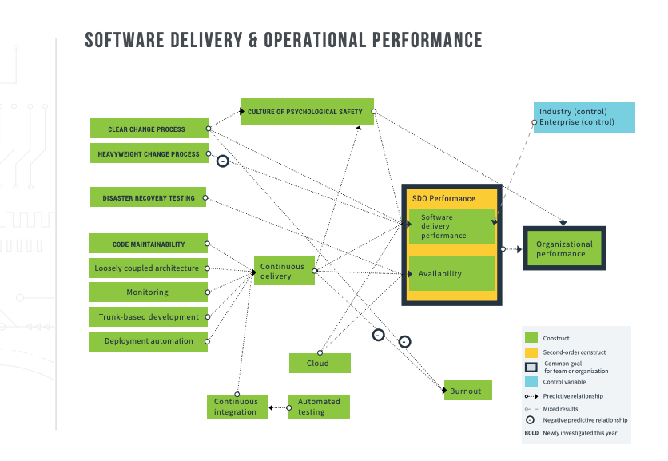
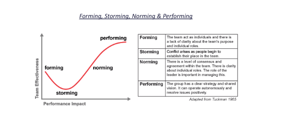
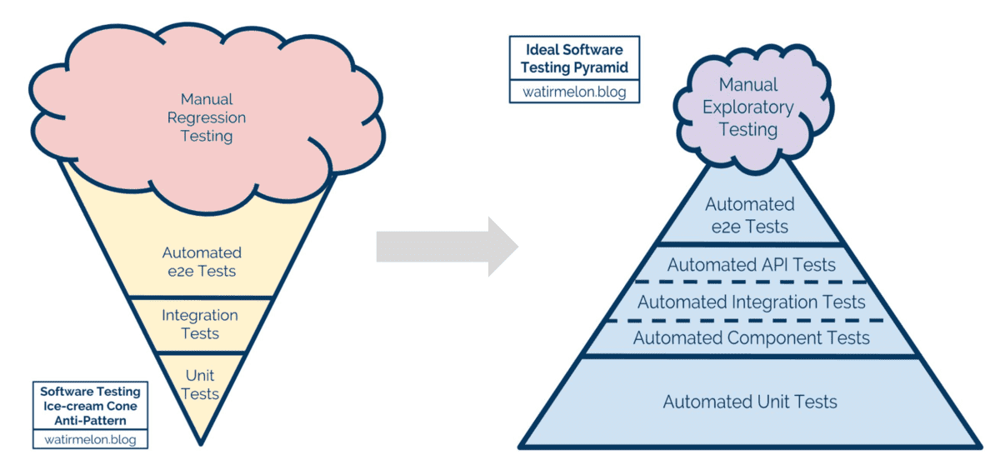
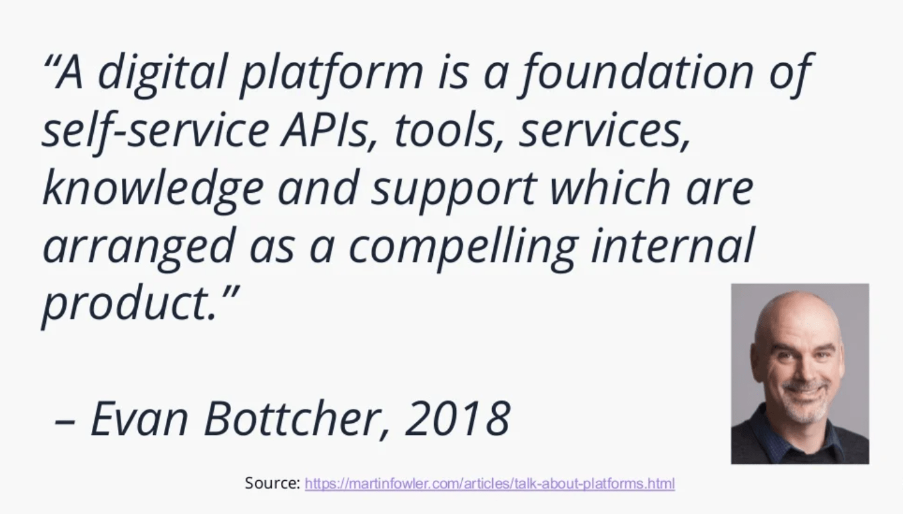
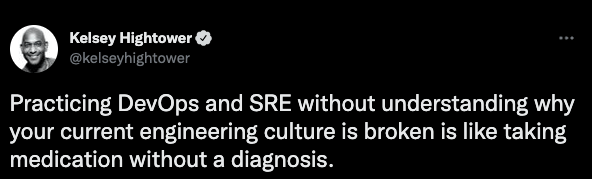

Overview
In the book, Accelerate: The Science of Lean Software and DevOps: Building and Scaling High Performing Technology Organizations, Dr. Nicole Forsgren, Jez Humble, and Gene Kim studied what made separated strong performing technology organizations from their less effective counterparts.
The book summarises 4 years of rigorous research from years of State of DevOps Reports, built upon 23,000 datasets from over 2,000 unique companies all around the world. The organizations studied included start-ups and enterprises, profit and not-for-profit organisations, and companies that were born digital alongside those that had to undergo digital transformation.
Four key metrics
The research identified that just Four Key Metrics distinguish the performance of various organisations. These “North Star” metrics serve as indicators of overall software engineering health.
These metrics aren’t “The Goal” of a business, but organisations that did well against these metrics had higher rates of profitability 💵, market share, and customer satisfaction. In other words; they allowed organisations to experiment faster 🚀, ship reliably, and prevent burnout.
The Four Key Metrics were as follows:
- Cycle Time (Change Lead Time) - Time to implement, test, and deliver code for a feature (measured from first commit to deployment)
- Deployment Frequency - Number of deployments in a given duration of time
- Change Failure Rate (CFR) - Percentage of deployments which caused a failure in production
- Mean Time to Recovery (MTTR) - Mean time it takes to restore service after production failure

Why these metrics
Where is the evidence that these metrics help organisational performance though? How do you convince your boss that these things matter??
Martin Fowler on Accelerate metrics
The picture they paint is compelling. They describe how effective IT delivery organizations take about an hour to get code from "committed to mainline" to "running in production", a journey lesser organizations take months to do. They, thus, update their software many times a day instead of once every few months, increasing their ability to use software to explore the market, respond to events, and release features faster than their competition. This huge increase in responsiveness does not come at a cost in stability, since these organizations find their updates cause failures at a fraction of the rate of their less-performing peers, and these failures are usually fixed within the hour. Their evidence refutes the bimodal IT notion that you have to choose between speed and stability instead, speed depends on stability, so good IT practices give you both.
So, as you may expect, I'm delighted that they've put this book into production, and I will be recommending it willy-nilly over the next few years. (I've already been using many bits from its drafts in my talks.) However, I do want to put in a few notes of caution. They do a good job of explaining why their approach to surveys makes them a good basis for their data. However, they are still surveys that capture subjective perceptions, and I wonder how their population sample reflects the general IT world. I'll have more confidence in their results when other teams, using different approaches, are able to confirm their reasoning. The book already has some of this, as the work done by Google on team cultures provides further evidence to support their judgment on how important a Westrum-generative organizational culture is for effective software teams.
Nicole Forsgren On How DevOps Metrics Correlate With Organisational Performance
Rigorous appraisal of these Four Key Metrics has shown that higher performers are 2x more likely to meet their commercial goals (productivity, profitability, market share, number of customers) and their non-commercial goals (quantity of products or services, operating efficiency, customer satisfaction, quality of products or services and achieving organisational or mission goals). Indeed, companies which do well under these DevOps metrics have a 50% higher market cap growth over 3 years. 📈
NOTE: These findings will apply whether you’re using a traditional “waterfall” methodology (also known as gated, structured, or plan-driven) and just beginning your technology transformation, or whether you have been implementing Agile and DevOps practices for years.
Flaws in previous attempts to measure performance
Before I jump into what capabilities a company needs to focus on to achieve these metrics, I wanted to explain how companies have in the past measured performance.
There have been many attempts to measure the performance of software teams. Most of these measurements focus on productivity. In general, they suffer from two drawbacks.
- First, they focus on outputs rather than outcomes.
- Second, they focus on individual or local measures rather than a team or global ones.
LOC (lines of code)
Measuring productivity in terms of lines of code has a long history in software. Some companies even required developers to record the lines of code committed per week. However, in reality, we would prefer a 10-line solution to a 1,000-line solution to a problem. Rewarding developers for writing lines of code leads to bloated software that incurs higher maintenance costs and higher costs of change.
Ideally, we should reward developers for solving business problems with the minimum amount of code and it's even better if we can solve a problem without writing code at all or by deleting code (perhaps by a business process change). However, minimizing lines of code isn't an ideal measure either. At the extreme, this too has its drawbacks. Accomplishing a task in a single line of code that no one else can understand is less desirable than writing a few lines of code that are easily understood and maintained.
Velocity
With the advent of Agile software development came a new way to measure productivity: velocity. In many schools of Agile, problems are broken down into stories. Stories are then estimated by developers and assigned a number of "points" representing the relative effort expected to complete them. At the end of an iteration, the total number of points signed off by the customer is recorded; this is the team's velocity.
Velocity is designed to be used as a capacity planning tool; for example, it can be used to extrapolate how long it will take the team to complete all the work that has been planned and estimated. However, some managers have also used it as a way to measure team productivity, or even to compare teams.
Using velocity as a productivity metric has several flaws. First, velocity is a relative and team-dependent measure, not an absolute one. Teams usually have significantly different contexts which render their velocities incommensurable. Second, when velocity is used as a productivity measure, teams inevitably work to game their velocity. They inflate their estimates and focus on completing as many stories as at the expense of collaboration with other teams (which might decrease their velocity and increase the other team's velocity, making them look bad). Not only does this destroy the utility of velocity for its intended purpose, but it also inhibits collaboration between teams.
I have seen this in the past myself, "gaming" the system and engineers aiming to deliver as my story points as you can within a sprint. Teams celebrating burn down charts and how many points they delivered compared to other squads...
This obfuscates the underlying quality of the code. And what tech debt or improvements you could have made but decided not to. If you don't have the right leadership in place or a peer review process, then this can unfold very quickly. And not being a good girl scout or boy scout. They talk about this more in "system thinking" and not having that growth mindset.
Utilisation
Finally, many organizations measure utilization as a proxy for productivity. The problem with this method is that high utilization is only good up to a point. Once utilization gets above a certain level, there is no spare capacity (or "slack") to absorb unplanned work, changes to the plan, or improvement work. This results in longer lead times to work. Queue theory in math tells us that as utilization approaches 100%, lead times approach infinity-in other words, once you get to very high levels of utilization, it takes teams exponentially longer to get anything done. Since lead time is a measure of how fast work can be completed, and is a productivity metric that doesn't suffer from the drawbacks of the other metrics we've seen, it's essential that we manage utilization to balance it against lead time in an economically optimal way.
Performance metrics
Below you can see the different groupings of teams and how they perform. You can see the elite teams, they're able to deploy on-demand. Their Cycle Time is less than one day. Their MTTR, mean time to restore, is less than one hour. Change failure rate is in the zero to 15% range. You can really see how the Cycle Time, in particular, the lead time for changes, how varies throughout those four columns. It's less than one day for the elite teams. For the high-performance teams, it goes down to that one day and one week. Medium teams one week and one month and the low performing teams are really between that one month and six months mark.


I will highlight next the main capabilities and provide real use-cases that I have observed in my experience:
Capabilities


Thoughts and feedback
As highlighted above, there is a lot of investment needed to achieve CD (Continuous Delivery) and become high-performing. Whenever you are asked about what makes a high-performing team, people say trust and a sense of purpose are important. And they are, don't get me wrong. But you also need engineers with a growth mindset, discipline, and technical acumen to make it a reality.
But regarding trust and a sense of purpose, there are numerous ways to achieve this within your team. Team topologies go in-depth into this discussion. They talk about Dunbar's trust number and having two size pizza teams (normally 5-8 depending on the complexity of the domain).
Then there is also Tuckman's model approach to team development: forming-storming-norming-performing.

Regular social events with your team and team playbooks are a great way to break the ice and start to understand eachothers personalities. Especially when you work in a culturally diverse environment. Working in Europe and the Asia Pacific, I have worked with many nationalities and am always keen to understand more about their culture.
Sense of purpose - having that clear vision and objective for the team and getting alignment is crucial to the success of the team. Running exercises such as team charter and RACI model help with this.
But now onto the fun part; the technical aspects. But I will let you in with a little secret first:
Engineers love shipping software! 😛
I remember years ago working in London for a mobile apps company. There was an engineer who I worked with that hadn't shipped code in over six months! (due to indecisiveness on the client's part). I could see how demoralized she looked not able to see her hard work go live. So always remember, engineers, love to ship software.
I have worked in high-performing teams in the past where change lead time was < 90 mins and deployment frequency daily. I have seen firsthand how it has a direct impact on job satisfaction. Having engaged employees doing meaningful work drives business value.
Deployment pipeline
Continuous delivery does not happen overnight. You need to methodically design your CI pipeline, and focus on your technical capabilities to make it a reality. Working with CI servers such as buildkite, GitHub actions or circleCI allows you to design your pipeline as code. We have moved on from the clickops days of TeamCity or bamboo where engineers are not across how CI/CD works. To be able to visualise it as code, can really help even new team members understand and get up to speed so much faster.
A lot of these CI servers now support plugins and integrations to expedite your delivery and simplify the work needed in the pipeline. Accessing secrets from secret manager, running docker-compose, generating test reports, and more. Continually looking to optimise and improve your pipeline to run as fast as possible through certain software techniques/enhancements or agent upgrades is an ongoing task.
Test Automation
Software quality and test automation are the next phases. Working in cross-functional teams can be a mindset change for a lot of engineers. It is well publicised now the mandate at AWS of decoupling architecture and building two size pizza teams that build, run, and support your workloads. Working on teams with 24/7 support, your mindset changes into how you perceive the quality of your code. Getting a change "out the door" to achieve a deadline is frowned upon. And those traditional measures of velocity and high utilisation.
If you are on 24/7 support, you don't want to be woken up at 3 AM in the morning right! So your mindset changes. You are more aware of the quality of your code and of others. Working on trunk-based development makes engineers' life also easier when reviewing PRs.
There is a lot of talk about shifting left and specifically shifting testing left. Having a healthy automated test suite and being aware of anti-patterns such as ice cream cones and cupcake is very important.
You cannot achieve CD by having a heavy layer of e-2-e tests. This will delay your change lead time and overtime those tests will become flaky and less reliable.

Shifting left to integration tests (that can run on your local machine) is the key. QAs focus less on manual tests and free them up to look at exploratory testing or chaos engineering for example. But many high-performing teams these days hire more engineers to focus on test automation and shifting testing and performance left rather than hire QAs. Working with the teams to educate them on the benefits of shifting left and changing that mindset of how to test a feature is extremely valuable.
Now companies are given the space to revisit their environments and look to consolidate. Not only does this improve change lead time and MTTR. But also the maintenance overhead of trying to keep envs in parity. Cost savings on your cloud provider can be significant too.
Feature toggles
Feature toggles are a great way to separate deploy from release when looking to consolidate envs. There are several commercial options out there such as launch darkly and other open source options to help with this. Github provides a great example of how they ship frequently and safely to production with the use of feature toggles.
Cloud
Cloud infrastructure is adopted quite heavily now by companies. And there is an expectation now for engineers to upskill in cloud providers such as AWS or Google Cloud. Working in cross-functional teams in the past we managed our own AWS accounts and infrastructure. There are many tools of choice for infra as code such as cloudformation, terraform, AWS CDK, and pulumi.
Companies also these days are identifying areas of the platform to design and build to provide self-service capabilities to the delivery teams. I have worked with teams that treated the platform as a product and its internal customers as delivery teams and looked to streamline their development process by providing custom tooling with well-documented APIs and support.

Deploying static sites and deploying app workloads to Kubernetes are examples I have seen. The key is to balance autonomy with alignment and still allow teams to choose their own tooling when needed. They call it providing a "thinnable viable" platform.
Slack has a great article on how they adopted this approach.
Proactive monitoring
Once you are happy with your pipeline, code quality, and test automation, the next area to invest in is monitoring. I am not going into the specifics here but you have many tools at your disposal now for logging and monitoring namely Splunk, sumologic, datadog, new relic, and appdymanics.
In a loosely coupled architecture having distributed tracing and a common log format really helps when troubleshooting. Investing time in an incident management playbook and alert notifications too. Just be aware of alert fatigue
Lean Management and product development
With this investment in CD, your team can now afford to streamline its change approval process. Gone are the days that you need to present to CAB for production deployments. This allows the team to adopt a peer-review process via pair programming or intra-team code review without sacrificing speed or quality.
One common requirement I hear from companies is segregation of duties which is a common regulatory requirement. This can now be achieved by using peer review to meet the goal of segregation of duties, with reviews, comments, and approvals captured in the team's development platform as part of the development process.
The time and attention of those in leadership and management positions are freed up to focus on more strategic work. This transition, from gatekeeper to process architect and information beacon, is consistent with the practices of organizations that excel at software delivery performance.
CAB idea is a form of risk management theater: we check boxes so that when something goes wrong, we can say at least we followed the process. At best, the process only introduces time delays and handoffs.
Lean product management and visibility of work from the business all the way through to customers is a new approach that I have seen. Team experimentation, visibility into customer feedback, and continous discovery are ways for the team and engineers to feel empowered to contribute on what opportunities to work on next, and become more engaged in product discovery and engaging with customers.
Shifting security left
Security is another CFR that can be shifted left. Areas I have worked on in the past are the automated management of dependencies via tools such as dependabot, snyk or renovate.
We devised a schedule on what frequency and priority we needed to be notified of, for our repos to prevent dependency fatigue. Having multiple automated PRs created every day for patches is not an efficient use of time! Tools such as snyk also provide infra scanning and container scanning. Engaging teams such as architecture and security earlier in the development lifecycle is also recommended.
Culture and transformative leadership
And lastly, but most importantly culture. Creating a climate for learning is a key investment within a company and investing in your people.
Some steps that I have advocated for and adopted in the past include:
- Creating a training budget
- Ensuring the team has the resources to engage in informal learning and space to explore ideas
- Blameless culture and making it safe to fail
- Creating opportunities and spaces to share information through lightning talks or guilds
- Make resources available for continued education such as meetups and attending conferences
As this survey has highlighted, investing in culture that values learning contributes significantly to software delivery performance.
As a leader, it is important to really invest in culture and be able to measure it. Your work is never done, always looking to continually improve. Providing the technical vision and where the company is going, supportive leadership, and challenging team members (intellectual stimulation) are the areas I continually focus on.
Pitfalls to watch out for
Focus on capabilities and not maturity The key to successful change is measuring and understanding the right things with a focus on capabilities - not on maturity. Maturity models focus on helping an org
"arrive"at a mature state and declare themselves done with their journey. Alternatively, capability models focus on helping an org continually improve and progress, realising that the technological and business landscape is ever-changing.Treating transformation as a one-time project. in high-performing organizations, getting better is an ongoing effort and part of everybody's daily work. However, many transformation programs are treated as large-scale, one-time events in which everyone is expected to rapidly change the way they work and then continue on with business as usual. Teams are not given the capacity, resources, or authority to improve the way they work, and their performance gradually degrades as the team's processes, skills, and capabilities become an ever poorer fit for the evolving reality of the work. You should think of technology transformation as an important value-delivery part of the business, one that you won't stop investing in. After all, do you plan to stop investing in customer acquisition or customer support?
Treating transformation as a top-down effort. In this model, organizational reporting lines are changed, teams are moved around or restructured, and new processes are implemented. Often, the people who are affected are given little control of the changes and are not given opportunities for input. This can cause stress and lost productivity as people learn new ways of working, often while they are still delivering on existing commitments. When combined with the poor communication that is frequent in transformation initiatives, the top-down approach can lead to employees becoming unhappy and disengaged. It's also uncommon for the team that's planning and executing the top-down transformation to gather feedback on the effects of their work and to make changes accordingly. Instead, the plan is implemented regardless of the consequences.
Google project
Google provides a very useful project on github showcasing how to capture these metrics. They use services on GCP such as Pub/Sub and BigQuery to capture this data in real-time. I would love to see an example of using Kafka and ksqlDB to mirror this approach (hack day idea!)

To find out where your company sits, run this quick survey
I hope you have found this post insightful and helped create a conversation in your organization about where you stand today. And where you want to go.
As my main man Kelsey said:
